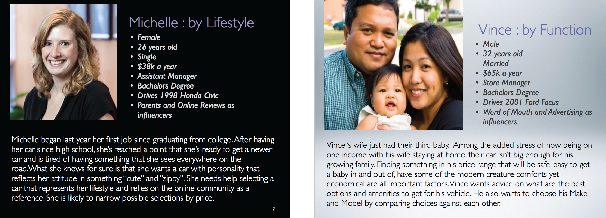
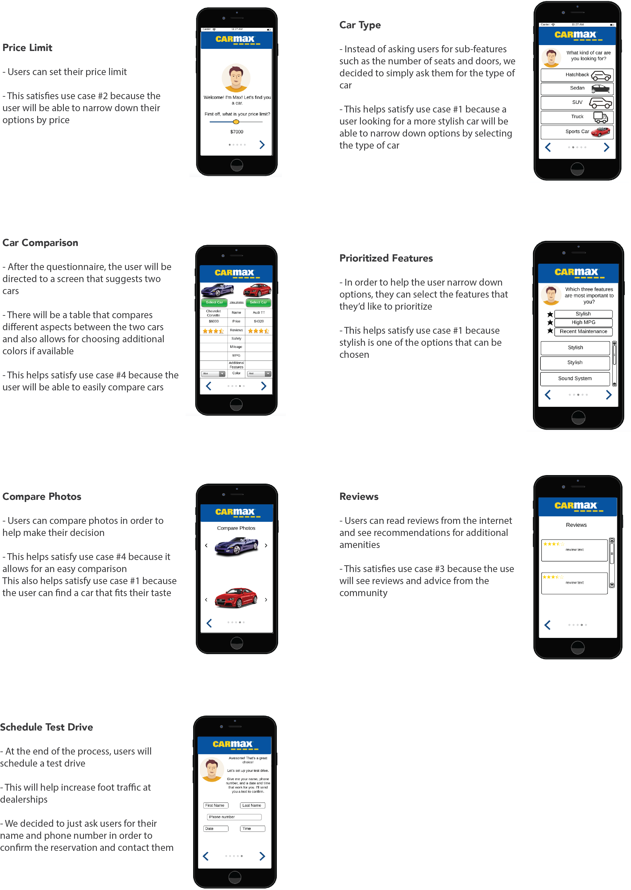
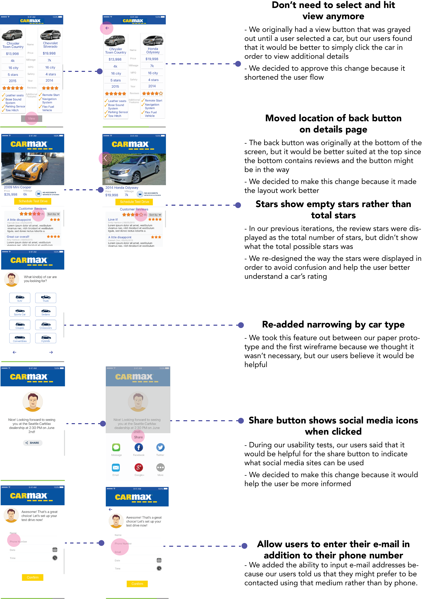
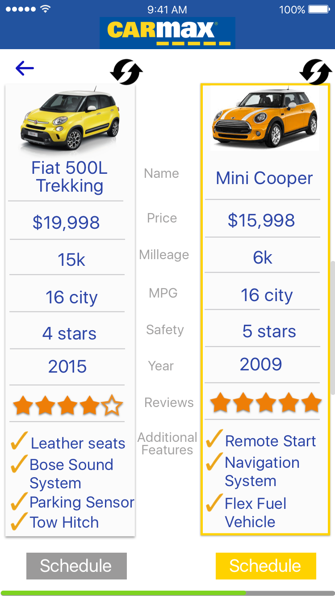
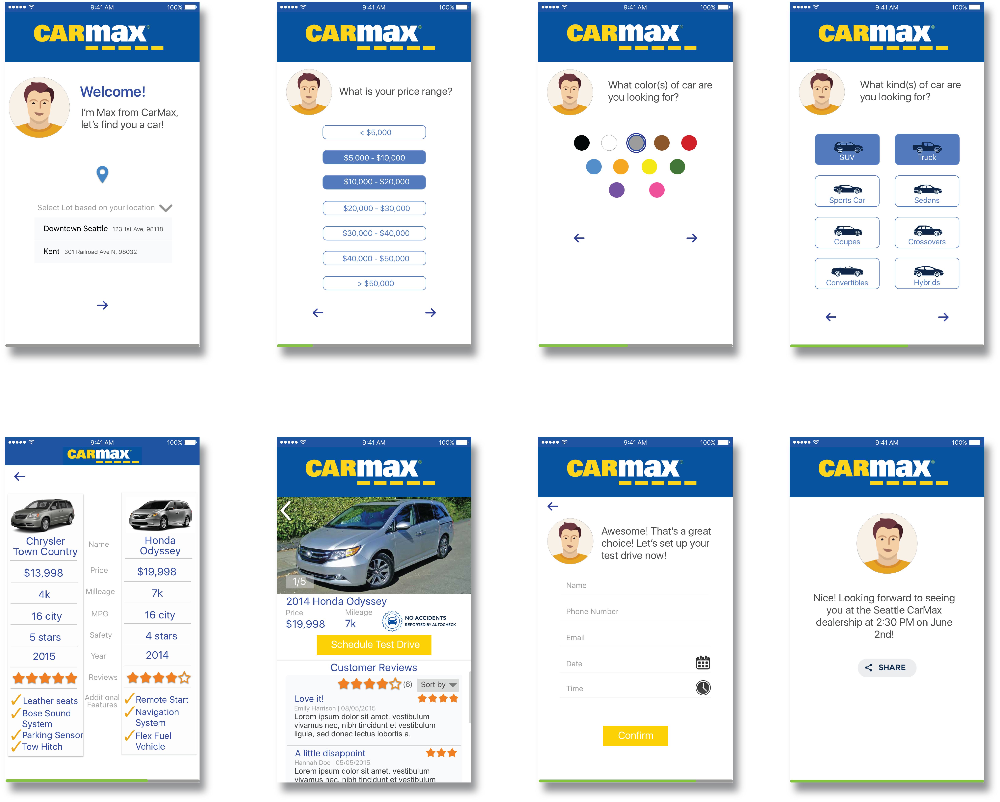

Overview
An iPhone App designed for CarMax used-car retailer company. It aims to make the car selection process easier for users and increase walkin traffic to CarMax
- DATE: Mar - Jun 2016
- CREATED WITH: Sketch
- ROLE: Prototype, User testing, Visual Design
Selecting a car is frustrating.
I am not the only one who finds the experience of looking for cars among all dealership companies frustrating. Searching for the cars, researching about the car, searching for dealerships, whether to buy a new car or a old one, reserving for test drives, all compose a user's dissatisfied experience. Therefore, redesign the current CarMax mobile App in order to make the process easier for users is necessary.
Design Process
Personas
We are given two persona by the instructor and design a solution for the following consumption. And our goals is to recreate a mobile-based tool that will simplify the car selection process for a potential buyer. Customers should be guided through a friendly process in advising them on what best models and options are recommended for what they are looking for in a vehicle.
Whiteboarding
First, several different use cases were considered and we considered to add features that will fit all users. The goal here is to have one or very few general user flow that satisfies all of the use cases. In order to increase foot traffic at the dealerships, we want users to simply schedule a test drive so that they have to go in.
Use Cases
For the first persona, which is a single looking for stylish car. The first Use Case is the customer wants a car for that fits her lifestyle and desire for a vehicle that stands out (“zippy” and “cute”). The second Use Case is the customer wants to be able to filter options by price and reviews.
For the second persona, which is family. The third Use Case is the customer wants a car that not only has his desired features, but features recommended from the community. The fourth use case is the customer wants to be able to easily compare cars.
Features Brainstorming
After finalizing our use cases, we began to brainstorm what features were needed in order to meet those use cases. We decided that our two main components were going to be a questionnaire and a comparison tool. The questionnaire would allow users to filter by price, style, and other features, satisfying use cases #1 and #2. The comparison tool would provide reviews and a side-by-side comparison of cars, satisfying use cases #3 and #4

Iteration
Between whiteboarding and creating paper prototype, we sat down and discussed our core features. I wanted to simplify the user flow and prevent the user from doing too much work. I kept thinking about how can we satisfy the use cases in the least amount of time and screens? I also wanted to streamline the experience for all users and ceate a core set of features that would be beneficial to all users.
Therefore, after discussion, we finalized our core features as the following:

Paper Prototype
We made several design improvements during this phase. We decided to implement a “buddy” named Max that will help guide users through the process. And I suggested to make a “car type” question to help the filtering algorithm narrow down options even more. We also added the ability to select additional colors for cars if available. I originally had an idea of looking at pictures by each car, but figured a comparison would be better.
Usability Tests
What we changed
By conducting usability tests, we learnt that users should be able to narrow down choices by car type. There should be sharing icons to help users know what they can share to. The progress bar and Max are both helpful. The whole process is very quick, which is good. Users want more than two options for car results.

What we kept
There will be only two options (no swapping). Although our users suggested including the ability to look through more results, we trust our algorithm’s ability to find cars. Having only two cars shortens the car-finding process. We tried the swap icons out, but it wasn’t intuitive. We also kept most of our other functionality

This didn’t make it to our final wireframe
Wireframes
Based on the several iteration of features of the application, I created a higher fidelity prototype. It aims to simplify user flows when possible, enhance user experience through feedback and other cues and give users more freedom.
